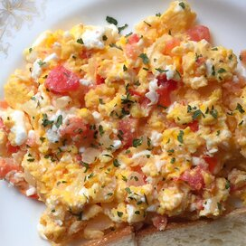

Feta Eggs Recipe

Description
A very TASTY way to add zip to boring scrambled eggs.
The feta cheese adds a complexity not found in plain eggs, and the various seasonings and tomatoes gives it a rich, exciting taste that will make your day.
Ingredients
- 1 tablespoon butter
- ¼ cup chopped onion
- 4 eggs, beaten
- ¼ cup chopped tomatoes
- 2 tablespoons crumbled feta cheese
- salt and pepper to taste
Directions
- Melt butter in a skillet over medium heat.
- Saute onions until translucent.
- Pour in eggs. Cook, stirring occasionally to scramble.
- When eggs appear almost done, stir in chopped tomatoes and feta cheese, and season with salt and pepper. Cook until cheese is melted.